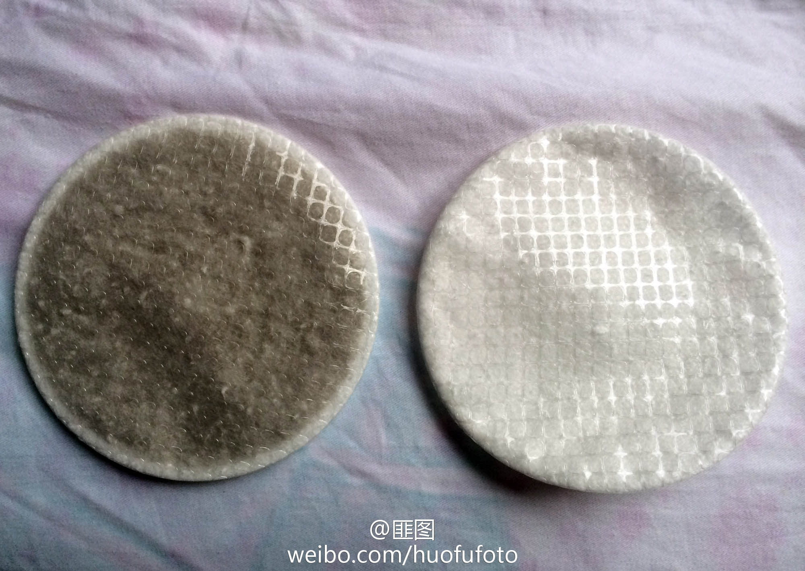

//@阿泰大叔: //@简直:我操。 //@Disrupt-furtively://@Yaakiy: 买口罩去惹//@眼睛长在屁股上:我的过去一片朦胧//@鞭鞭少将: 卧槽//@趴体男神: 卧槽… //@元摔摔:你京还打不打算过了？//@床上的Alice: 你们北京还能不能居住了！ //@老Fin:都买个好点儿的口罩吧，这几天他们忘了往毒气里掺空气@食指大夫:#全国雾霾# 别说戴口罩没有用，有图为证！（左为使用10小时（北京三环内），右为未使用）@拍者网 